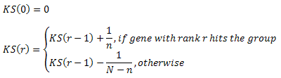
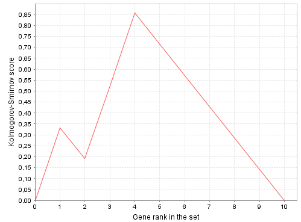
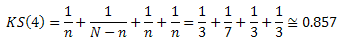

Enrichment analysis (GSEA)
Gene set enrichment analysis (GSEA) is an advanced categories classification technique which works with ranked set of genes.
A group from classification is considered over-represented if most of input set genes belonging to the group are top-ranked genes.
Ranking is specified by user via numerical column (Fold-change values, for example).
For this analysis you have to prepare input table having Ensembl genes as rows. If your data have different row identifiers, consider
using "%analysis:Convert table%" analysis first.
%parameters%
Result
As the result of this analysis you will see the table where each row corresponds to the single group.
The following columns are always present in the result:
- ID: Accession number representing given group.
- Nominal p-value: (P): P-value, calculated for the group using random permutations of the ranks: fraction of random permutations which showed better ES.
Only groups for which P ≤ Pmax are included into result.
- ES: Enrichment score (or the most extreme Kolmogorov-Smirnov score).
- NES: Normalized enrichment score. It's ES divided by average ES for all random sets which have the same sign.
- Number of hits (n): Number of genes from the input set matched to the group.
Only groups for which n ≥ nmin are included into result.
- Plot: Click to see the plot. The plot shows how Kolmogorov-Smirnov score (KS) depends on gene rank (r).
Axis X shows gene ranks, axis Y shows KS value.
KS can be defined recurrently as follows:

Here N is the total number of genes in the input group.
The value of ES is the most extreme (maximal by absolute value) KS. Plot example is shown below.
- Hits: List of Ensembl IDs from the input set matched to the group (number of IDs is always n).
More columns may present for specific classifications (e.g. group description). Column 'Level' if present means minimal number of steps necessary to achieve the root of classification hierarchy (thus higher values mean more specific and smaller groups).
Plot example

In this example plot is displayed for the set of 10 genes (N = 10) and 3 hits in the group (n = 3), which have ranks
1, 3 and 4. The most extreme KS value (which is enrichment score or ES) equals to KS(4), which can be calculated as follows:

References
- Gene Set Enrichment Analysis page on the Broad Institute site